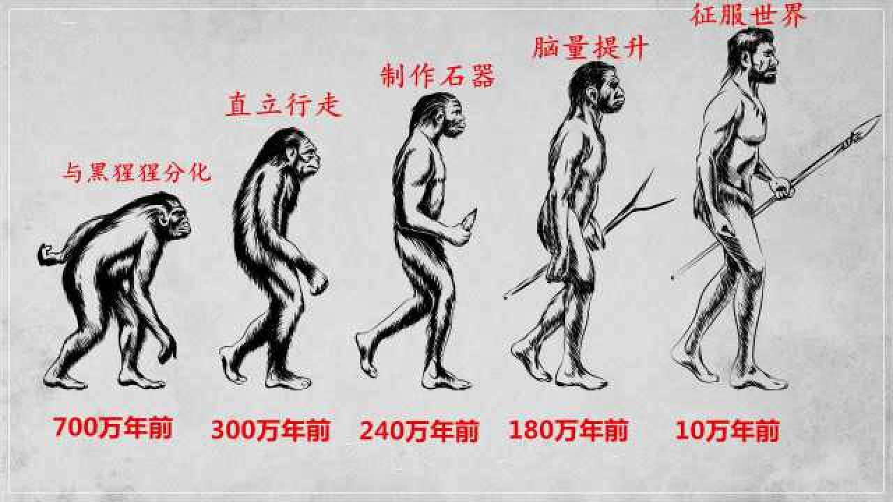
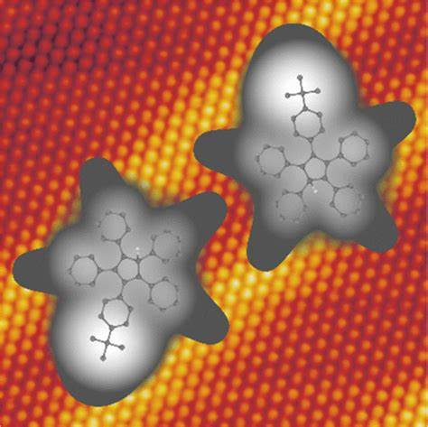

Your browser doesn't support the features required by impress.js, so you are presented with a simplified version of this presentation.
For the best experience please use the latest Chrome, Safari or Firefox browser.
第0课:
过去，现在，未来
zzh
2024.08
过去现在未来
化学的，人的
听其言而观其行，
了解一个人，就是要了解过去做什么，现在正在做什么，未来将要做什么
了解化学，就是发生了什么
化学的定义
在原子、分子水平上
研究
物质的组成、结构、性质、转化及应用的
一门基础学科
在了解化学的过去现在和未来之前，先来看一下化学的定义。
化学的定义随这科学的发展是不断的变化的，经过几百年的发展才变化成这样，经历了怎样的变化才变成这样，
来一起看一下化学的前世今生和来生

人类的进化历程
人类不再是被动进化，而是主动选择“进化”
陶瓷、金属、火药、酒等
思考、教育、学习
这是一个漫长的故事，化学的发展贯穿了人类的进化历程。
火，肉中的蛋白质在外界高温下就开始分解，人类不再需要，维持庞大的消化系统，多余的营养就完全用于大脑的发展
进化
现代身体几乎相同的人诞生了。
十万年间，成就，思考，教育，学习，>>> 认识世界，征服世界
三个永无止境的问题
- 是什么what
- 为什么why
- 怎么做how
- 怎么样由目的的实现物质转化、创造物质，
更好的为人类的生存与发展服务？
化学萌芽期
十万年间，人类积累了丰富的知识和经验：
例如我国的《本草纲目》和《天工开物》
十万年间，人类创造了众多的理论：
古希腊哲学家柏拉图提出万物源于“火、水、气、土”
我国古代哲学家提出五行“金木水火土”
波义耳
1661提出化学元素的概念，标志近代化学的诞生
现代化学
人类的认识由宏观向微观、由定性向定量、由静态向动态不断深入
发展出丰富的理论和技术：
比如，量子化学、化学热力学和动力学、新分子的合成化学、高分子化学、化学工业
十万年间的摸爬滚打，在200年的系理论完善，又经过了200多年的飞速发展，形成了我们今天所看到的现代化学
一分钟都不能缺失
化学不仅仅是一个冰冷的学科，他还是一部人类的奋斗史，他告诉我们科学的发展没有所谓的捷径，只有厚积才能薄发。
为了鼓励大家厚积薄发，所以我选择了一个简单的任务作为大家学习的开始
元素周期表
现代化学特征
从宏观和微观认识物质
用符号表征物质
在不同层面创造物质
化学的未来
学科交叉、微观探索……
graph TD
A(化学)
B(材料)
C(医药)
D(国防)
E(信息技术)
F("……")
A-->B
A-->C
A-->D
A-->E
A-->F

解决了一个问题带来新的问题，就如同欲望一般
勤
人生之败，非傲即惰，二者必居其一，然勤则百弊皆除，勤分六种：
身勤：路虽远，行则必至，事虽难，做则必成。
眼勤：遇一人，必详细观察，看一文，必反复审阅。
手勤：易丢之物，随手拾之，易忘之事，随笔记之。
口勤：他人之长，多夸多赞，自己之短，多学多问。
心勤：精诚所至，金石为开，苦思所至，诸事皆通。
脑勤：谋定而后动，知止而有得，万事皆有法，道正事则通